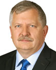

2025-04-01
Projekt wpłynął do Sejmu Druk nr 1149 ↗
obowiązujeuchwałaI czytanie na posiedzeniu Sejmu (2025-04-23)Sejm 10/1149
| Proces | Sejm kadencja 10, nr 1149 |
|---|---|
| Wpłynął | 2025-04-01 |
| Ostatnia zmiana źródła | 2025-05-06 |
| Źródło | api.sejm.gov.pl ↗ |
205 zdarzeń

Brak zdarzeń dla wybranych filtrów.